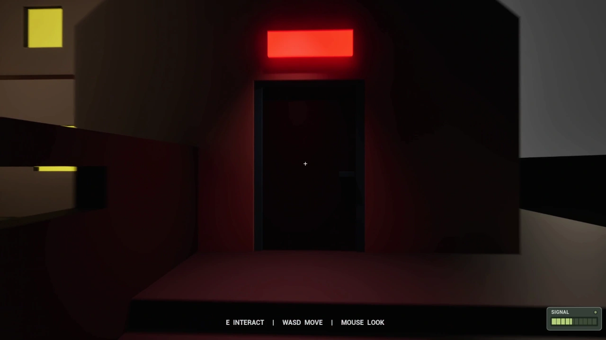
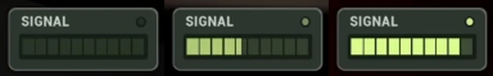
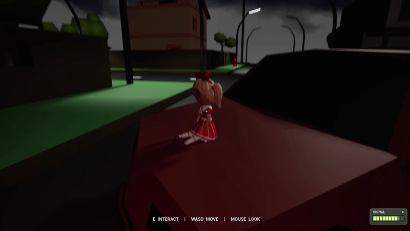

Graduate Capstone
Threshold
Game Design & Player Experience ResearchA first-person psychological horror game about environmental anomalies, narrative discovery and player decision-making. Developed as a graduate capstone at Northeastern University, the project pairs iterative game design with mixed-methods player experience research.
- Game Design
- Narrative Design
- Player Experience Research
- Mixed-Methods Research
- Playtesting
Gameplay Demo — Milestone C
My Contributions
Threshold is a team project. The Milestone C player experience research was my main individual responsibility; programming, 3D modeling and environment art are not part of my role.
-
Research · individual
Research Design
Independently designed the player experience study, including research questions, playtesting procedures, behavioral observation protocols, questionnaires, and post-play interviews.
-
Research · led
Data Analysis & Design Recommendations
Led the collection and analysis of player experience data, identified recurring gameplay and usability issues, and translated the findings into design recommendations for the team’s next iterations.
-
Design · with the team
Gameplay & Narrative Ideation
Contributed to core gameplay ideation and narrative development, exploring anomaly-based mechanics, environmental storytelling, player progression, and the integration of psychological horror elements.
Game Concept
Threshold is a first-person psychological horror game set in a suburban neighborhood across unstable timelines. Players search for a missing older sister by investigating environmental anomalies, interpreting audiovisual clues, and navigating between different layers of the neighborhood.
The game explores how uncertainty, environmental storytelling, and ambiguous information influence player exploration, decision-making, and psychological tension.

A red light above a front door. Houses are where players commit to a choice (0:22).
Core gameplay loop in Milestone C
Gameplay loop: explore the neighborhood, detect environmental anomalies, interpret scanner signals and environmental cues, then select a house. A correct choice advances the player to the next layer; an incorrect choice returns them to an earlier layer. In both cases the loop starts again with exploration. Across the four layers, players also collect four required parts.
- Scanner
- A proximity-based signal meter in the corner of the screen. It strengthens as the player gets closer to something relevant, but it does not say what that something is.
- Audio and light
- Sounds and flickering lights draw the player toward places in the neighborhood. Some of them guide; some are deliberately misleading.
- Layers
- The Milestone C demo has four neighborhood layers, and the environments grow darker as the player progresses.


Screenshots
Frames from the Milestone C demo footage, slightly brightened for the web. Select an image to enlarge it.
Research Questions
Milestone C added a proximity scanner, guiding and misleading audio cues, more visible anomalies, layer transitions, route feedback and darker environments to the anomaly loop of the previous milestone. The study asked whether these additions help first-time players read clues, make decisions and understand their progress.
-
RQ1 Anomaly detection & navigation
Can first-time players use scanner signals and environmental cues to identify the correct house and advance to the next neighborhood layer? How do they interpret these signals?
-
RQ2 Progress feedback
Can players recognize whether their house choice was correct or incorrect based on the game’s feedback?
-
RQ3 Psychological tension
Which audio and visual cues do players associate with feelings of tension while exploring the neighborhood?
Research Methodology
- Study type
- Mixed-methods playtest
- Participants
- First-time players
- Play time
- About 8 minutes
- Prototype
- 4 neighborhood layers
Scope
This was an exploratory, small-sample playtest, not a controlled experiment. Participants were recruited through the team’s personal networks; anyone who knew the project or had played an earlier build was excluded. Each person played individually on their own computer, so hardware and setups varied.
-
01 · Before play
Pre-play questionnaire
Gaming frequency, experience with horror games, and familiarity with anomaly-detection games. Participants were introduced to the objective and controls, but not to anomaly locations or correct routes.
-
02 · During play
Observation & think-aloud
Anomaly identification, scanner use, navigation decisions, incorrect house choices and progression, with players describing what they noticed and why they chose. Prompts stayed neutral: “What do you notice?”
-
03 · After play
Post-play assessment
- 30-item Player Experience Inventory (PXI)
- Three game-specific 5-point Likert items
- Post-play interview
-
04 · Analysis
Data analysis
- Descriptive statistics
- Behavioral observation analysis
- Qualitative categorization of interview responses
- Self-report compared with observed behavior
Design Directions for the Next Build
Design changes I recommended to the team for the next build. Each row pairs a design goal with the proposed change; the playtest results themselves are not published here.
Scanner readability
Design goalMake it clear what the scanner is detecting, not only that something is close.
Proposed changeDifferentiate the signals for environmental anomalies and for required collectibles.
Proposed
Implemented The scanner’s detection radius was doubled during Milestone C iteration.
Progress feedback
Design goalMake advancing and being sent back to an earlier layer clearly distinguishable.
Proposed changeMake the current neighborhood layer and collection progress more visible, and give advancement and rollback distinct audiovisual feedback.
Proposed
Narrative integration
Design goalGive collectibles and anomalies a narrative reason, not only a rule.
Proposed changeConnect collectibles, environmental anomalies and player decisions more directly to narrative discovery.
Proposed
Horror atmosphere
Design goalBuild tension as a rising curve across layers rather than as isolated moments.
Proposed changeIntroduce more gradual atmospheric escalation through sound, lighting and environmental change across layers.
Proposed
Player agency
Design goalKeep interpreting the world central to play.
DirectionReduce reliance on scanner guidance and encourage players to interpret narrative and environmental clues independently.
Future direction
Implemented in the build Proposed for the next build Proposed changes are planned for future playtesting.
Research Reflection
This project has strengthened my interest in the relationship between game mechanics, player cognition, and experience design.
By designing and conducting a mixed-methods player experience study, I explored how behavioral observations, quantitative measures, and qualitative feedback can inform iterative game design beyond conventional measures of gameplay performance.
Future Directions
- Further integration of gameplay and narrative
- Improved anomaly detection and progression feedback
- A more refined psychological horror atmosphere
- Additional playtesting and iterative evaluation
- A final playable demo and research documentation
The capstone is still in development; this page will be updated with the final demo, research documentation and playtest results once they are approved for public release.